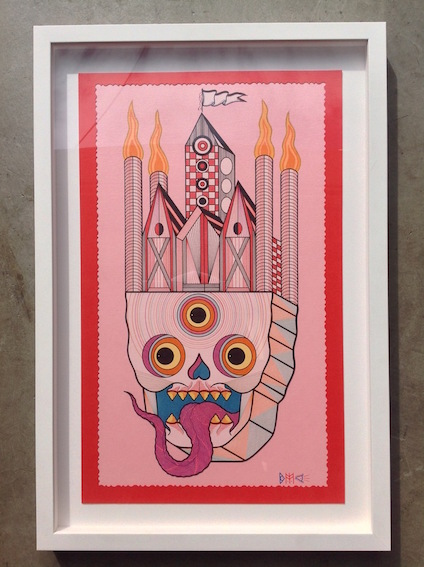
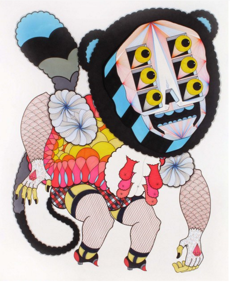

Let's start with when we first met. Do you remember where and when?
I believe this was helping you build some of the shelving for the Cotton Candy Machine. you can correct me if I am wrong. I had met Tara sometime before and when she told me about the store and that you may need a little help, it was a no brainer. I am such a huge fan of the idea and what you guys are doing that I have been pretty willing to help anytime I can. Plus you ended up being a pretty awesome dude so it is not hard to come and hang out and lend a hand whenever you may need it.
Awe, thank you David. You are an awesome dude for saying so. Well we did meet once before, it was at your show in San Francisco at White Walls Gallery. The show was super busy and I didn't do anything to crazy to remember me by. On top of that I was standing with Tara so I wouldn't remember me ether. haha.
In preparing for this show I described your work as "Creating images of precise rays and intricate patterns making unbelievable texture and depth in his characters." I took a stab at it and I feel like I am pretty close with some of the work. You once said that you want your work to look as if a computer has done it. How would you describe the work you are doing now?
I love that a lot of the time people are totally confused as to how I made these things. I like the mystery. I like people getting so lost in an image and all of it's tiny details that they don't notice how close they have gotten to the work until they almost bump their heads into it. Then they step back and realize they were looking at some giant tranny monster in fetish gear choking out a snake that turns into a penis. I think only when people get up close and really investigate what am I doing do they realize how much time, effort, and skill it took to make it. I just love seeing people interact with what I have done. it always makes me feel like I have done something right.
 You are always working on so many commissions and different projects. You even showed with us last year in our grand opening "Tiny Trifecta" and again with 5 other artists in the "Shirts and Destroy and the Exquisite Corpse" show. Could you share a few of your highlights from last year?
Lets see. I kind of work my ass of all the time so that is a hard one. I will have to say doing the Exquisite Corpse show with all of those amazing artist was one of the funniest art making experiences of my life. We had so much fun with each other and with the expectations of what each other was going to make that we all really pushed ourselves to really try and have fun with it. Every meeting we had to exchange the drawings was just a comedy show and a fantastic learning experience that I just got so much out of it. I think we all did. Doing my interview with you was also a pretty damn good time. I will say I still want someone to do something with all of that footage. I think there is probably some really great stuff from all of us. and we are all totally wanting to see Seldon go on his current state of black metal rant
On top of creating artwork for galleries and different illustration jobs you play guitar in the Brooklyn based band Marching Teeth. I've had the pleasure of seeing you guy and I must say I liked it, heavy, mean and loud. Tell me a little about the band and what is next for you guys?
We hope to have a recording done and out with in the next 2 to 3 months. This band has been one of my favorite band projects i have ever done. Getting to start a band with 2 of your best friends and play heavy metal is kind of awesome. it is a labor of love more than anything seeing as Aaron Baumle the drummer is married and has child, and that Damon Meena the bass player singer is one of the owners of the company that we all work for. We play as much as we can and are all super proud of the songs we have written. We hope that we are doing something a little different than the rest ( I guess everyone does) and love getting any chance to play. We are heading to South By Southwest for the first time the day after the Cotton Candy Machine opening.
Hell yeah! We will be down there again for Flatstock 33! This years SXSW just keeps getting better! On the topic of music and and art... What can you tell me about working on the Young Widows album art?
I used to work with Evan Patterson for years at a screen printing shop in Louisville Kentucky. We spent a lot of time standing next to each other talking shit everyday and listening to music. I got to see the beginning of the band and see how it grew and changed. I always love to hear what Even is up to, he has always been one of my favorite musicians. So when he asked me to do it and gave me his concept I didn't hesitate for one second. I did a few different versions before i settled on what ended up being the cover. I have never been anything but proud to have gotten to work with them and am looking forward to doing stuff with his new band called Old Baby. (not kidding about that name) they are my favorite thing he has done yet.
Thank you for your time and I am super excited for the opening!
Check out more of David M. Cook's work